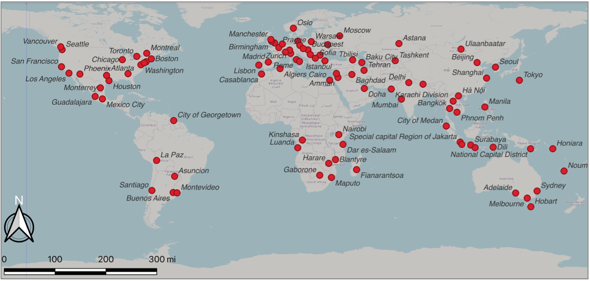

From a global satellite study of urban heat to a citizen-facing map of New York City's street trees.
A Global Satellite Perspective — with Christopher D. Lippitt and Gernot Paulus · University of New Mexico & Carinthia University of Applied Sciences
A global analysis of how land cover shapes urban heat, using satellite-derived land surface temperature across 100 cities from 2000–2020. The study finds that land-cover change doesn't just raise average temperatures — it disproportionately intensifies extreme heat: water loss and impervious-surface expansion were the strongest drivers of warming, vegetation stayed thermally neutral, and cropland gain showed a cooling effect.
The results point to a clear mitigation priority — protect water bodies and limit impervious expansion — and argue for evaluating strategies against extreme-heat metrics rather than averages alone.

Built as the final project for GEOG 585L with teammates Cameron, Carter, and Loc, this app visualizes New York City's Tree Census data. It lets users explore the distribution, species, and health of trees throughout the city, supporting environmental research and urban planning efforts.
Built with Leaflet.js for interactive mapping and D3.js for data visualization.